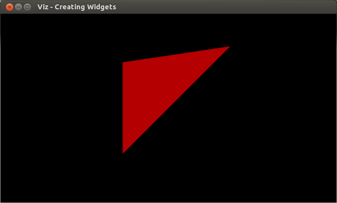

Creating Widgets
Goal
In this tutorial you will learn how to
- Create your own widgets using WidgetAccessor and VTK.
- Show your widget in the visualization window.
Code
You can download the code from here.
#ifndef USE_VTK #include <iostream> int main() { std::cout << "This sample requires direct compilation with VTK. Stop" << std::endl; return 0; } #else #include <opencv2/viz.hpp> #include <opencv2/viz/widget_accessor.hpp> #include <iostream> #include <vtkPoints.h> #include <vtkTriangle.h> #include <vtkCellArray.h> #include <vtkPolyData.h> #include <vtkPolyDataMapper.h> #include <vtkIdList.h> #include <vtkActor.h> #include <vtkProp.h> using namespace cv; using namespace std; static void help() { cout << "--------------------------------------------------------------------------" << endl << "This program shows how to create a custom widget. You can create your own " << "widgets by extending Widget2D/Widget3D, and with the help of WidgetAccessor." << endl << "Usage:" << endl << "./creating_widgets" << endl << endl; } class WTriangle : public viz::Widget3D { public: WTriangle(const Point3f &pt1, const Point3f &pt2, const Point3f &pt3, const viz::Color & color = viz::Color::white()); }; WTriangle::WTriangle(const Point3f &pt1, const Point3f &pt2, const Point3f &pt3, const viz::Color & color) { // Create a triangle vtkSmartPointer<vtkPoints> points = vtkSmartPointer<vtkPoints>::New(); points->InsertNextPoint(pt1.x, pt1.y, pt1.z); points->InsertNextPoint(pt2.x, pt2.y, pt2.z); points->InsertNextPoint(pt3.x, pt3.y, pt3.z); vtkSmartPointer<vtkTriangle> triangle = vtkSmartPointer<vtkTriangle>::New(); triangle->GetPointIds()->SetId(0,0); triangle->GetPointIds()->SetId(1,1); triangle->GetPointIds()->SetId(2,2); vtkSmartPointer<vtkCellArray> cells = vtkSmartPointer<vtkCellArray>::New(); cells->InsertNextCell(triangle); // Create a polydata object vtkSmartPointer<vtkPolyData> polyData = vtkSmartPointer<vtkPolyData>::New(); // Add the geometry and topology to the polydata polyData->SetPoints(points); polyData->SetPolys(cells); // Create mapper and actor vtkSmartPointer<vtkPolyDataMapper> mapper = vtkSmartPointer<vtkPolyDataMapper>::New(); #if VTK_MAJOR_VERSION <= 5 mapper->SetInput(polyData); #else mapper->SetInputData(polyData); #endif vtkSmartPointer<vtkActor> actor = vtkSmartPointer<vtkActor>::New(); actor->SetMapper(mapper); // Store this actor in the widget in order that visualizer can access it viz::WidgetAccessor::setProp(*this, actor); // Set the color of the widget. This has to be called after WidgetAccessor. setColor(color); } int main() { help(); viz::Viz3d myWindow("Creating Widgets"); WTriangle tw(Point3f(0.0,0.0,0.0), Point3f(1.0,1.0,1.0), Point3f(0.0,1.0,0.0), viz::Color::red()); myWindow.showWidget("TRIANGLE", tw); myWindow.spin(); return 0; } #endif
Explanation
Here is the general structure of the program:
Extend Widget3D class to create a new 3D widget.
class WTriangle : public viz::Widget3D { public: WTriangle(const Point3f &pt1, const Point3f &pt2, const Point3f &pt3, const viz::Color & color = viz::Color::white()); };
Assign a VTK actor to the widget.
// Store this actor in the widget in order that visualizer can access it viz::WidgetAccessor::setProp(*this, actor);
Set color of the widget.
// Set the color of the widget. This has to be called after WidgetAccessor. setColor(color);
Construct a triangle widget and display it in the window.
WTriangle tw(Point3f(0.0,0.0,0.0), Point3f(1.0,1.0,1.0), Point3f(0.0,1.0,0.0), viz::Color::red()); myWindow.showWidget("TRIANGLE", tw);
Results
Here is the result of the program.
